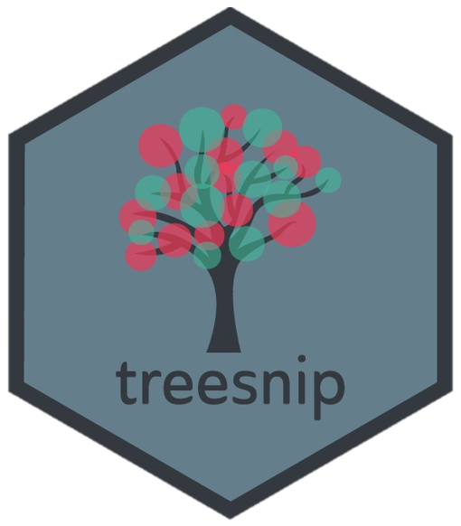

treesnip 
This package provides the following bindings for parsnip package:
- the
treeengine fordecision_tree; - the
catboostengine forboost_tree- only available incatboostbranch. See catboost; - the
lightGBMengine forboost_tree.
docs
Installation
Not on CRAN yet.
remotes::install_github("curso-r/treesnip")See catboost to use with catboost.
Minimal Example
# decision_tree
model <- parsnip::decision_tree()
parsnip::set_engine(model, "tree")
# boost_tree
model <- parsnip::boost_tree(mtry = 1, trees = 50)
parsnip::set_engine(model, "catboost")
parsnip::set_engine(model, "lightgbm")Hyperparameters map
decision_tree()
| parsnip | tree |
|---|---|
| min_n | minsize |
| cost_complexity | mindev |
boost_tree()
| parsnip | catboost | lightGBM |
|---|---|---|
| mtry | rsm | feature_fraction |
| trees | iterations | num_iterations |
| min_n | min_data_in_leaf | min_data_in_leaf |
| tree_depth | depth | max_depth |
| learn_rate | learning_rate | learning_rate |
| loss_reduction | Not found | min_gain_to_split |
| sample_size | subsample | bagging_fraction |
Catboost
Originally treesnip had support for both lightgbm and catboost. Since catboost has no intent to make it to CRAN we removed the parsnip implementation from the main package. You can still use it from the catboost branch that we will keep up to date with the main branch.
The catboost branch can be installed with:
remotes::install_github("curso-r/treesnip@catboost")